API Documentation
A look into the University Faculty API
Starting point
The API can be accessed through this starting URI http://comp3227.ecs.soton.ac.uk/modules/15
General URI Format
Each URI uses the http protocol at the beginning of the URI e.g "http://". The domain of the URI is comp3227.ecs.soton.ac.uk. After that, all the other pages are found through a path.
Reminder about endpoint definition
An endpoint in the context of an API (Application Programming Interface) is a specific URL linking to a particular resource.
When interacting with an API, endpoints can execute specific activities like requesting data or triggering a process.
Module URIs
Format of Module URI
URI Parameters
| Parameter |
Meaning |
| {Module id} : int |
The id of the module as ordered in the list of modules stored in the API server.
The id can be left out to display a the list of all modules stored on the API server |
Example URI: http://comp3227.ecs.soton.ac.uk/modules/109
Requests methods and Responses
The following Requests are allowed for endpoints http://comp3227.ecs.soton.ac.uk/modules/{Module id}
- GET
- PUT
- PATCH
- DELETE
- HEAD
- OPTIONS
GET Method
Using the get method returns a representation of the URI, and a 200 OK response if the call is successful.
If the value in the {Module id} is not recognised by the API, a 404 Not Found Response.
Response from a GET Request on URI 'http://comp3227.ecs.soton.ac.uk/modules/109'
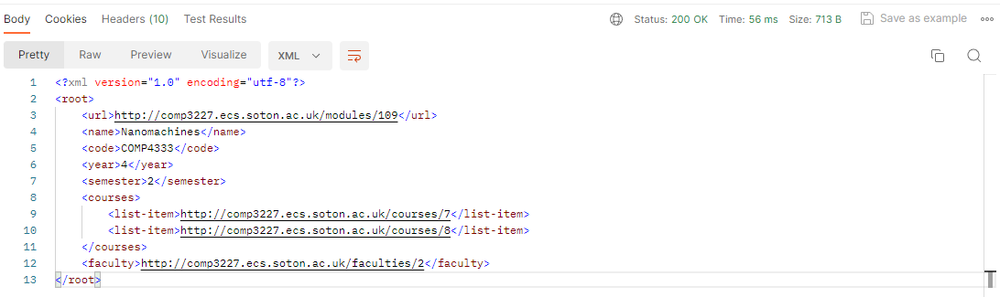
PUT Method
Using the put method allows you to replace fields of the representations of the module with new values, giving a 200 OK response if the call is successful.
A request to modify a module
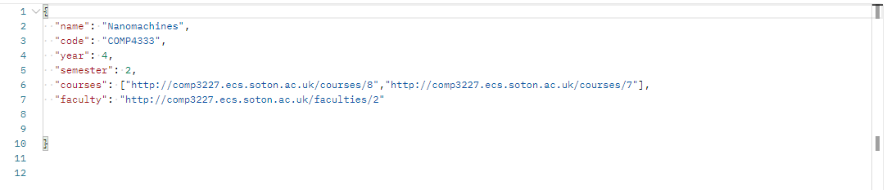
A successful response
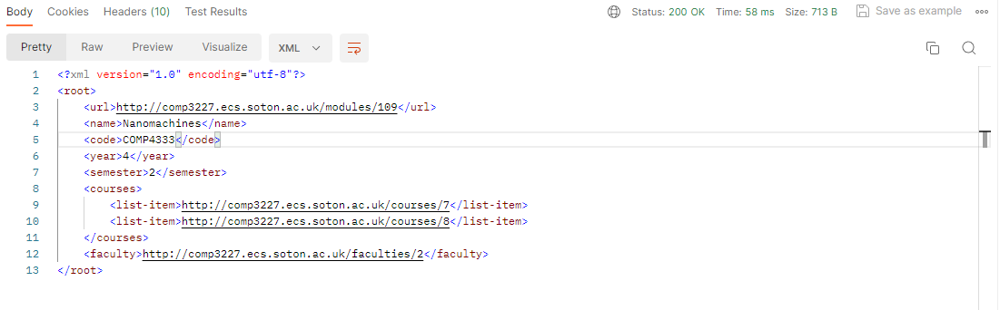
If incorrect authentication is provided, a 403 Forbidden Response is returned. If no authentication header is included a 401 Unauthorised code is returned. Additionally, if the request body cannot be parsed correctly or specified fields aren't filled in the request body, a 400 Bad request is returned and the URI remains unchanged. The response body also replies with any fields that must be included in the request body.
If any values are out of range e.g a year not being less than or equal to five, a 400 Bad request response is given.
A response to a bad PUT request
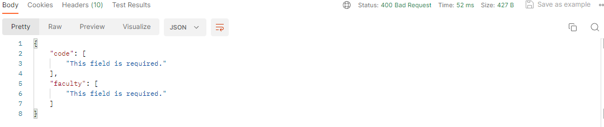
PATCH Method
Using the patch method allows you to replace values in the representation with new values. The server responds with a 200 OK response code and updates the URI if the call is successful.
Example Patch Body
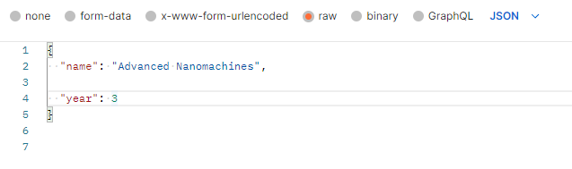
Body showing Successful Patch
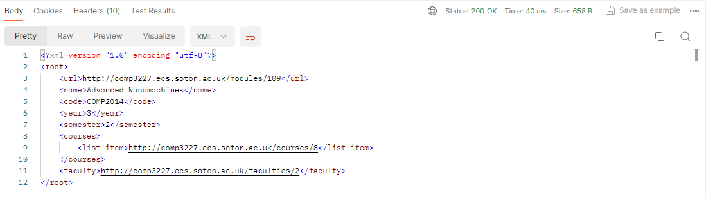
If incorrect authentication is provided, a 403 Forbidden Response is returned. Additionally, if the request body cannot be parsed correctly, a 400 Bad request is returned and the URI remains unchanged.
DELETE Method
Using the delete method allows you to send a request to delete one of the modules listed. If the server accepts your authentication, the module is removed from the server and a 203 No Content Message is returned. The server will keep processing the delete method until it times out.
If no authentication header is added to the delete request, a 401 Unauthorised Response code is returned and the module does not get deleted. If you try to delete a module without the correct Authentication, a 403 Forbidden response is returned and the module does not get deleted.
HEAD Method
Using the head method gives a response with no body, including only the headers used by the server response message.
If the value in the {Module id} is not recognised by the API, a 404 Not Found Response is given.
Headers returned
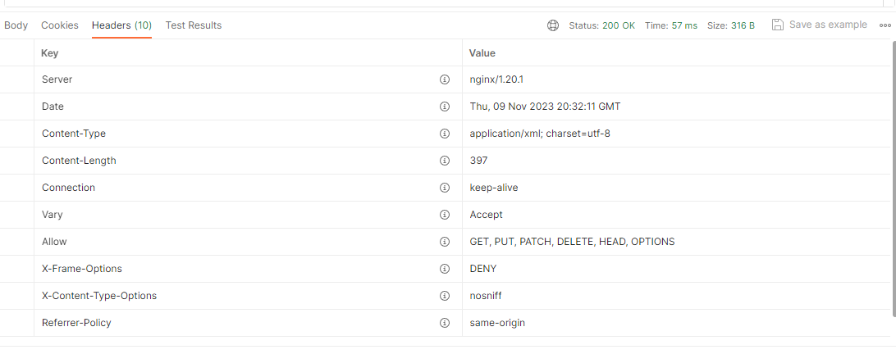
OPTIONS Method
Using the OPTIONS method returns the formats of the representations stored in the API Server, and a 200 OK response if the call is successful.
It also gives information about how the body of a data-changing method like PUT or PATCH is parsed, showing that the message can be parsed in JSON, XML, or as CSV text.
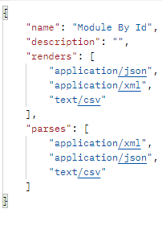
If the value in the {Module id} is not recognised by the API, a 404 Not Found Response is given.
Representation Format
The formats allowed for the returned representation are in JSON, XML and CSV Text. The default representation given by the server is in JSON format.

The fields in the body are as follows (In JSON Format):
URI Parameters
| Parameter |
Value Type |
Description |
| url |
String |
The endpoint of the resource |
| name |
String |
Name of the module in the resource |
| code |
String |
Module Code in the resource |
| year |
Integer |
In which year the module is carried out, specified by the resource |
| semester |
Integer |
In which semester the module takes place, specified by the resource |
| course |
List of Strings |
A list of endpoints to which course the module takes place in, linking to the course resource. |
| Faculty |
String |
The endpoint of the faculty supervising the module, specified by the resource. |
Format of Module List URI
List of modules
To request a list of all modules, instead use the URI
http://comp3227.ecs.soton.ac.uk/modules, excluding the {Module_id} parameter.
Upon this request the webserver returns a resource that lists all the modules that have been created in the service
Requests methods and Responses
The following Requests are allowed for the endpoint http://comp3227.ecs.soton.ac.uk/modules
:
GET Method
Using the get method returns a representation of the resource and a 200 OK response if the call is successful, as well as the servers headers that they choose to show in their response.
The representation is given as a list of modules spanning across every valid endpoint http://comp3227.ecs.soton.ac.uk/modules/{module_id}, containing information about the module name, url and code.
not all information about the individual module is given, e.g the year and semester it takes place in and the faculty and courses it belongs to.
Representation Format
The formats allowed for the returned representation are in JSON, XML and CSV Text. The default representation given by the server is in JSON format.
The fields in the body of the response are as follows (In JSON Format):
URI Parameters
| Parameter |
Value Type |
Description |
| url |
String |
The endpoint of the resource |
| name |
String |
Name of the module in the resource |
| code |
String |
Module Code in the resource |
| year |
Integer |
In which year the module is carried out, specified by the resource |
| semester |
Integer |
In which semester the module takes place, specified by the resource |
| course |
List of Strings |
A list of endpoints to which course the module takes place in, linking to the course resource. |
| Faculty |
String |
The endpoint of the faculty supervising the module, specified by the resource. |
If incorrect authentication is provided, a 403 Forbidden Response is returned. Additionally, if the request body cannot be parsed correctly, a 400 Bad request is returned and the URI remains unchanged.
POST Method
The POST method allows the client to send a request to create a new URI in the web server.
A Post Request to make a new module in the server
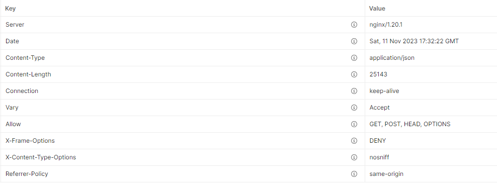
Headers returned
The keep alive header maintains a connection between the client and the API server as it is checked 'true'.
HEAD Method
Using the head method gives a response with no body, including only the headers used by the server response message.
Headers returned
The keep alive header maintains a connection between the client and the API server as it is checked 'true'.
OPTIONS Method
Using the OPTIONS method returns the formats of the representations stored in the API Server, and a 200 OK response if the call is successful.
If the correct authorisation e.g Authorization header with 'Token {Token Val}' is included in the request message, additional information is returned in the response such as the actions that are performed with a POST request
Options Body without Authorisation
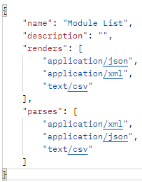
The body shows that the name of the resource is labelled as a list of modules with no description for the description field.
Additionally, it shows that the formats the representation can take are in JSON, XML and CSV in the renders sections and that messages in the client request body are parsed in JSON XML and CSV as well.
Options Body with Valid Authorisation
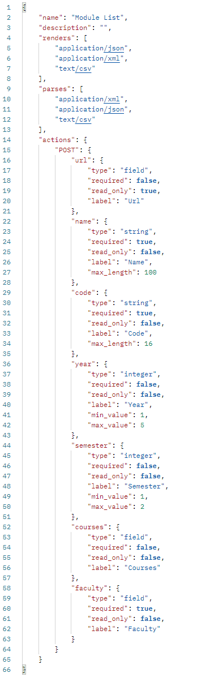
This adds extra information about the settings on the actions that the POST method is allowed to take. For example it requires a POST request body
to include the field "name", limit the values for the "year" field to between 1 and 5 and limit the string size for the "code" field. It can also set which fields are read_only, meaning they would not replace the field data for that specified field.
Course URIs
Faculty URIs